The Makings of
a Pervert Detector
I started with a question about who gets to record us. A semester of sketches, circuits, and a few very stubborn enclosure problems later, I had Cappy.
My A3 presentation · PDF ↗Looking for a hammer for this server room
During orientation week, Vineeta asked us to imagine ourselves five years into the future and write a newspaper article about it. I was feeling pretty disillusioned by the direction of tech, so I wrote a hit piece on future me for selling out and making “AI and AR powered smart glasses for cats.” It was funny, but the worry behind it was real.
Researching the Luddite movement brought me back to that article. Camera-equipped glasses were making it easier to record people without asking, while the people being recorded had very little say. I wanted to find “a hammer for this server room”: something tangible that could push back.
I explored three ideas. A malicious QR code might exploit the glasses’ automatic scanning, but that route had already been patched after Google Glass. Anti-facial-recognition clothing could disrupt some computer vision systems, but wouldn’t stop someone recording a video. A wearable BLE detector felt like the most useful direction: make the presence of the device visible to the people around it.
Matt Ratto’s Critical Making took a while to click for me. It made more sense as the object began sparking conversations that shaped my next decisions. Alexander R. Galloway’s Protocol, particularly tactical media, introduced another way to resist: use the system’s own rules and gaps to your advantage. Bluetooth advertisements became my entry point.
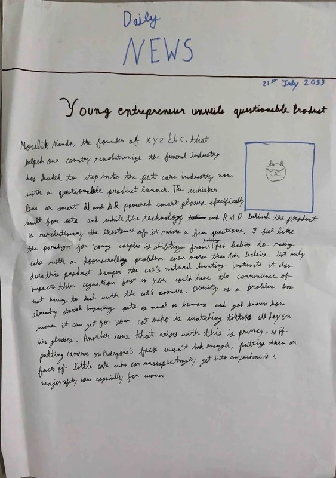
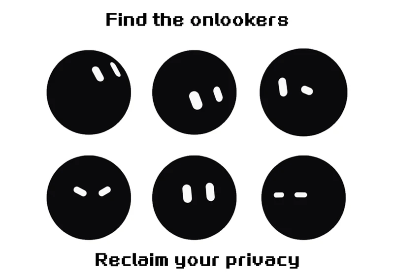
Finding something I’d want to wear
I called the project CAP — Catch a Pervert. The name was deliberately provocative; the design needed to make people curious enough to talk about privacy without asking them to wear a warning sign.
My moodboard pulled together e-ink name tags, pendants, hair clips, watches, and lilguy. I also entertained a hat with a police siren and a mannequin with laser eyes at building entrances. Those were fun detours, but I kept coming back to a companion you could carry with you.
An e-ink name tag was my first choice. A good display was outside my budget, so I switched to a 1.28-inch round TFT LCD. I used Figma to sketch colourful squircles around that circular face, imagining different attachments that could let people choose how to wear it.
The parts list settled around an ESP32-S3-Zero, the round screen, a battery, and USB-C charging. I still had to decide how Cappy would alert me beyond the display; that eventually became the vibration motor.
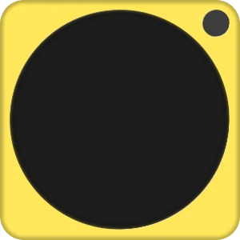
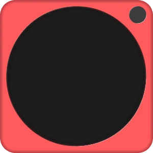
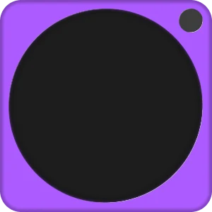
Learning what I’d forgotten to measure
I went shopping for parts on SP Road in Bengaluru, asked friends who knew electronics for help, and got my ESP32’s RGB LED cycling through colours. It was a small win that made the rest feel possible.
My first attempt at Bluetooth detection was much less successful. I asked an LLM for code to detect my Apple Watch and expected it to be straightforward. Modern devices randomize identifiers and don’t announce themselves with a stable, obvious name; my assumptions about Bluetooth were doing most of the damage.
I found the open-source Nearby Glasses Android repository on GitHub and adapted its approach: sniff BLE advertisements for company identifiers and device-name strings. I added my Nothing earphones to the target list so I could test the reactions in real time without having smart glasses on hand.
For the enclosure, I moved beyond the Tinkercad tools I knew and learned Fusion 360 through YouTube. I measured my components with a measuring tape and made the case as compact as I could. I remembered tolerances, but forgot how much space jumper wires take up—and left out a USB cutout.
I had to leave the shell open to connect and power the electronics. For A2 I had a form prototype and a functional prototype in the same object, just never at the same time. That was a pretty clear brief for version two.
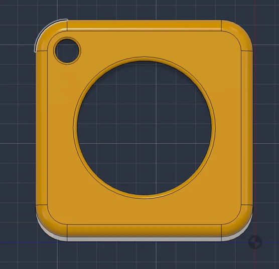
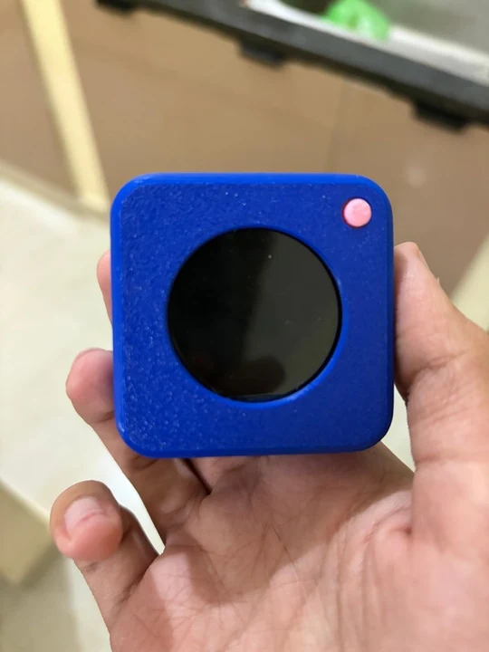
Giving Cappy a personality
Once detection was running, I wanted more than an LED changing colour. Inspired by lilguy, I designed Cappy’s eyes and animations in Figma, exported GIFs, and used Google’s Antigravity AI to help translate the movement into code that could run on the ESP32.
I gave him happy, curious, angry, and sleepy expressions. White eyes look around when the coast is clear, yellow eyes notice a matching signal, and red eyes object when it gets closer. He could already doze off, which made waking him feel like the next interaction to build.
After A2 feedback, I went back to the breadboard with an ADXL345 accelerometer and a MOSFET-driven vibration motor. I tested and calibrated double-knock detection, then used it to wake Cappy into a groggy state. The motor added a sharp bzz for curious and a bzz-bzz for angry, so the wearer could feel the alert without checking the screen.
I added Rage Mode at the last minute: if someone keeps coming closer after the angry warning, Cappy flashes red and gives three buzzes. It felt like the natural extreme of the character I’d already made.
Watch my early animation test ↗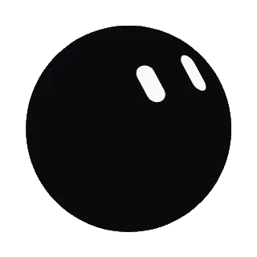
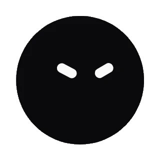
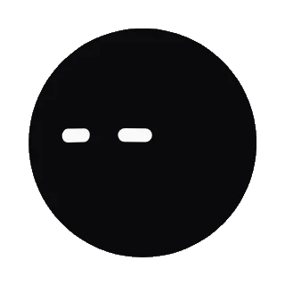
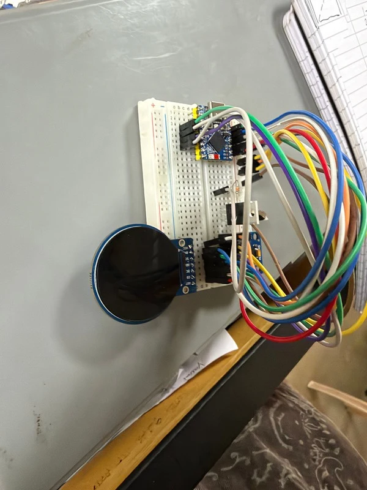
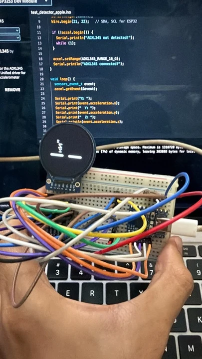
Making room for the whole circuit
I initially wanted to shrink Cappy further. With my current parts that wasn’t realistic, and buying integrated micro-hardware would mean starting over and spending roughly twice as much. After talking it through with Manuel, I sized up instead: more room for the electronics, and a face people could see.
I redesigned the orange Cappy 2.0 enclosure in Fusion 360 with proper screen support, a snap-fit connection between the halves, a physical switch slot, and USB-C access. This time I was designing around the actual circuit.
Then came the bit I’d been putting off: soldering. Nataraju and Sudarsini helped me move everything off the breadboard and connect the display, accelerometer, motor, battery, charging circuit, and switch. Without their help, I could very easily have fried the ESP32.
I learned that one the hard way. Long story. The useful outcome was a closed, battery-powered Cappy with the electronics and body finally working together.
I tried him on my shirt and waistband. That choice mattered to me: you could let everyone meet Cappy, or keep his alerts private.
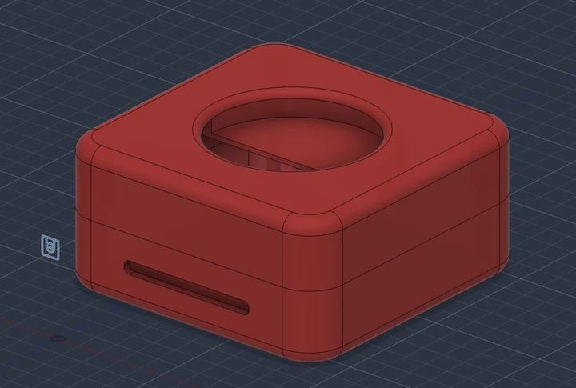
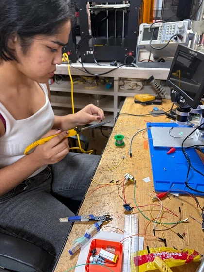
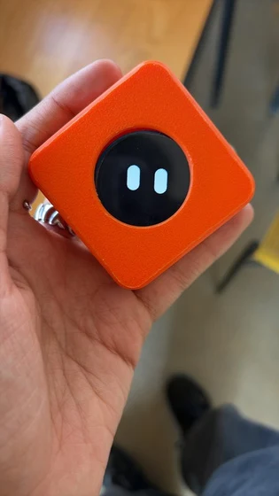
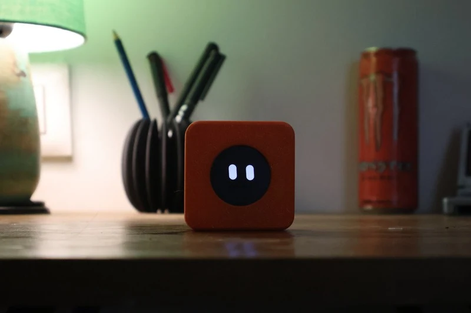
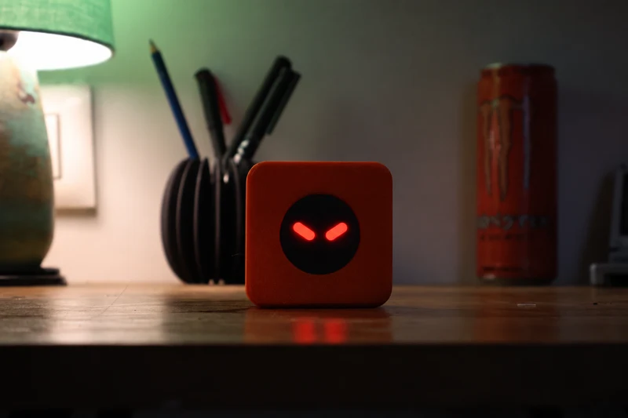
How I turn a signal into a reaction
Cappy’s firmware runs a NimBLE scanner alongside the display loop. I check advertised manufacturer data and device names against my target list, including the Nothing earphones I used for testing. A match gives me an RSSI reading to work with.
I smooth those readings with an exponential moving average: 0.65 * prev + 0.35 * new. Separate entry and exit thresholds create hysteresis, so a reading hovering near a boundary doesn’t keep flipping the face. I also leave at least one second between tier changes.
↓
Manufacturer ID or device-name match
↓
Filtered RSSI = 0.65 * prev + 0.35 * new
↓
Proximity tier + 1 second debounce
↓
Cappy’s eyes + haptic feedback
| State | Enter | Return / exit |
|---|---|---|
| Curious | First match below −73 dBm | Angry at ≥ −73 dBm |
| Angry | ≥ −73 dBm | Curious below −78 dBm |
| Rage | ≥ −55 dBm | Leaves rage below −62 dBm |
| Happy | No packet for 1.5 seconds | New match or idle timeout |
| Sleepy / sleeping | 30 / 60 seconds of inactivity | New match or double-knock |
The room, device orientation, and other Bluetooth traffic all affect it. I use these tiers to drive Cappy’s reactions; they aren’t calibrated metre measurements.
I render the eyes with LovyanGFX at a target of around 30fps, using a 40 MHz SPI display configuration in main.cpp. My PlatformIO file still has TFT_eSPI flags at 20 MHz from earlier experiments; LovyanGFX is the active display implementation.
| Part | Connection | ESP32-S3 GPIO |
|---|---|---|
| GC9A01 screen | SCLK / MOSI | 12 / 11 |
| GC9A01 screen | CS / DC / RST | 10 / 9 / 8 |
| ADXL345 | SDA / SCL / INT1 | 1 / 2 / 3 |
| Vibration motor driver | MOSFET control | 4 |
The screen runs on 3.3V. I’ve included my signal pinout here; I haven’t drawn a full power-circuit schematic.
Getting Cappy in front of the class
With Cappy nearly ready, I still needed actual Ray-Ban Meta glasses for A3. I reached out to Prof. Jayashima on campus and followed up, but didn’t hear back. Reddit and WhatsApp marketplace groups gave me two leads: one was understandably nervous about lending expensive glasses to a stranger, and the other disappeared the second I mentioned travelling from Yelahanka to JP Nagar.
So Sudarsini and I improvised a very special pair of “unreleased” Meta glasses. For the live class demo, she wore the props while my test device triggered Cappy’s real BLE detection. As she approached, his eyes changed and the vibration motor kicked in. Once she stepped away and he dozed off, I knocked twice to wake him.
A minimal booth, my final poster, and Cappy on my body were enough to let the interaction speak for itself. I enjoyed how quickly people went from meeting the character to talking about privacy and the technology around us.
Watch my final class demo ↗What worked for me?
I brought interface design, CAD, embedded code, and electronics together into a working wearable. The face, buzzes, and knock-to-wake gave people an easy way into the project. The conversations they started helped me understand critical making through practice.
What did wearing it reveal?
Cappy’s weight made him sag on my shirt. I kept adjusting or holding him up to see the screen. I want to improve the attachment so he stays in place without needing that attention.
What still needs testing?
I saw the curious-to-angry transition shift from under 1m to around 3.5m between rooms. I need to tune the signal behaviour and test with actual smart glasses across device states and environments. A broad manufacturer or name match can pick up other products too, and it can’t establish whether a camera is recording.
Where would I take Cappy next?
I’m still excited to make this a more feasible product for the people around me. A better clip, smaller integrated electronics, and trials with real camera wearables are all directions I’d like to explore, either personally or through my capstone. Sharing the build openly could also give the project a life as tactical media beyond my studio.
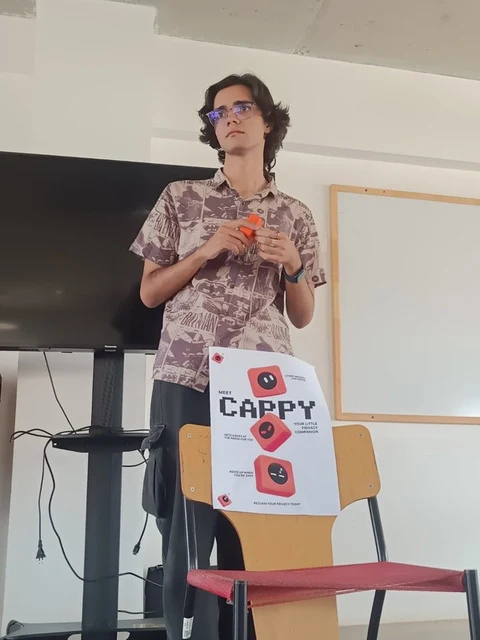
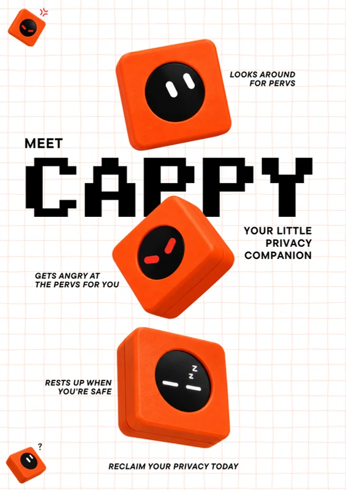
The people I learned with
I designed and built CAP as part of my M.A. Experience Design studio, By Any Media Necessary, at Srishti.
Thank you to Vineeta for the orientation exercise that started the question, Manuel for the feedback that helped me rethink the form, and Nataraju and Sudarsini for helping me with electronics and soldering. Sudarsini also brought our improvised demo to life.
Matt Ratto’s Critical Making, Alexander R. Galloway’s Protocol, and the Luddite movement helped me connect making with resistance.
I adapted the detection approach from Nearby Glasses. lilguy inspired Cappy’s character, and I used AI assistance to develop the embedded code and recreate my animations.
My 26-page A3 presentation, photographs, CAD model, and firmware document this build. You can download the code and model in the firmware chapter above.
Hervé Studio’s Badge Factory and its assembly guide inspired the explorable object and deeper journal. Three.js shows my CAD model, GSAP handles the scroll transitions, and the browser playground recreates Cappy’s reactions.